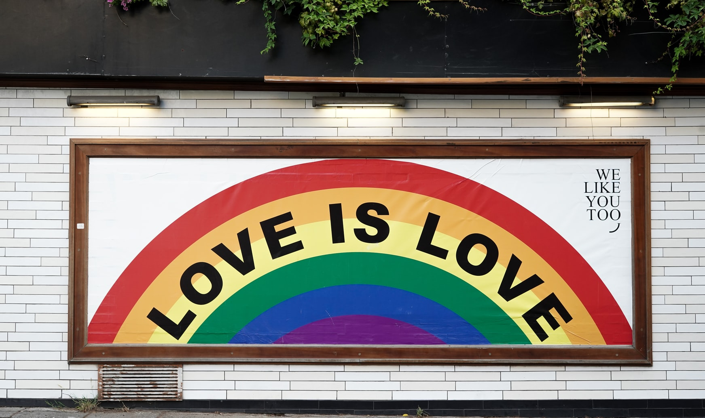
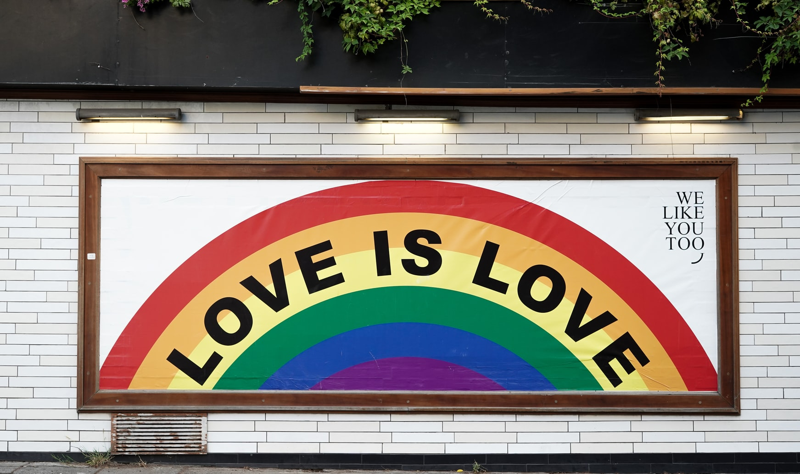

LGBTQIA+ Community
Voor diegene die niet weten wat dit betekend. LGBTQIA+ is eigenlijk een community voor iedereeen, daar bedoel ik mee het maak niet uit hoe je jezelf identificeerd, of op welk geslacht je valt, je hoort er bij.
Nu vraag je je natuurlijk af waarom ik dit op mijn website zet. Nou de reden is dat ik zelf iemand ben die in de community zit en ik wil er graag wat extra aandacht aan besteden. Waarom? Jaarlijks worden er namelijk heel veel mensen uit onze community gepest, bedreigd, vermoord en noem maar op. Dit moet stoppen en mensen moeten zich hier echt meer in gaan verdiepen. Helaas worden er ook mensen hun land uitgezet of moeten vluchten voor hun familie. Daar wil ik graag iets extra's aan doen.
 

Photo copyright free from unsplash.com
Omdat ik wil dat er meer mee word gedaan wil ik je vragen om te doneren op deze website LGBT Asylum . Deze website zet zich in voor asielzoekers die wegens hun sexualiteit of gender hun land uit worden gestuurd of vluchten van hun familie. Niemand zou op straat moeten leven en helemaal niet op deze manier. Dus kan je iets missen? Doneer dan graag op hun website en help iemand een thuis te zoeken.